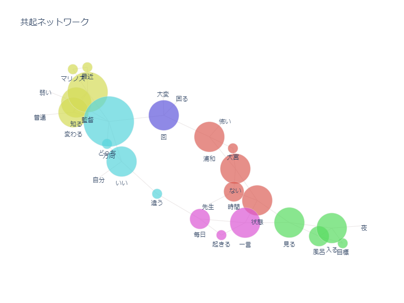
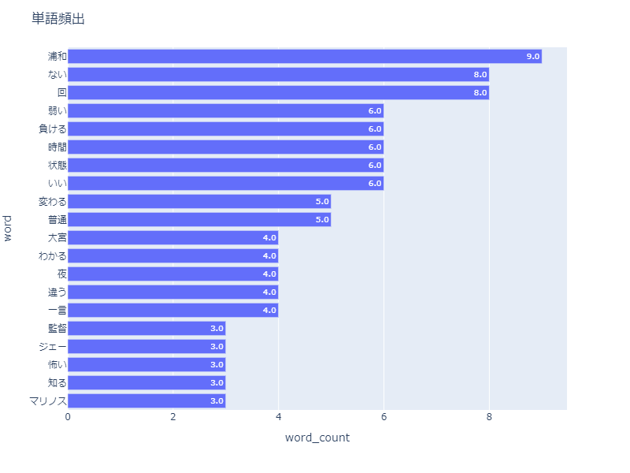
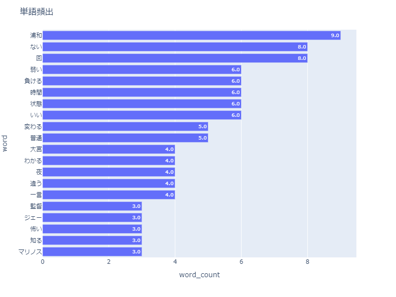

インタビュー準備
１.デジタルフィールドノート＆CSV統合
- ①スマホとマイクを繋げてインタビューの様子を撮影。インタビュー後、撮影した動画データをパソコンに移す。
- ②デジタルフィールドノート（DFN）を開く。
動画ファイルを選択し、メモを追加していく。（前半後半というように分担してやると良い） - ③『保存&ダウンロード』をクリックする。
すると、すべて『tag.csv』という名前でCSVファイルが保存されるため、各自名前を変える（このときCSVファイルは開かないようにする） - ④CSV統合ツールを開き、
２.wordで音声記録
３.データ分析
 
